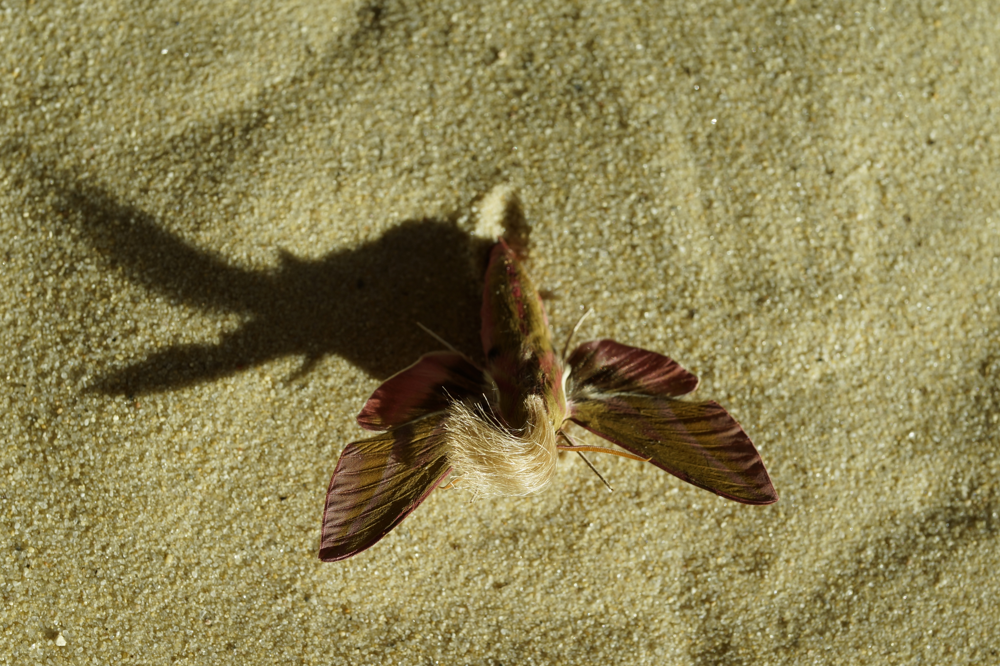
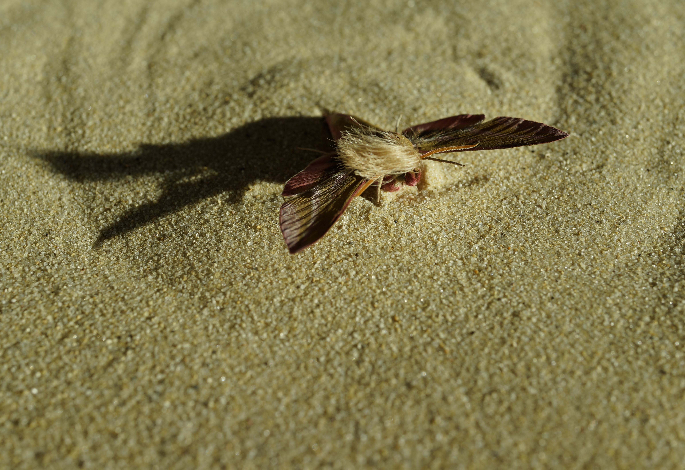

Residential
Eco-Residential Complex
A sustainable housing development featuring green roofs, solar integration, and community gardens. Located in Portland, Oregon.
View Project →Sustainable architecture that harmonizes with nature and human experience
Start Your ProjectA sustainable housing development featuring green roofs, solar integration, and community gardens. Located in Portland, Oregon.
View Project →Modern office building with flexible workspaces and biophilic design elements.
View Project →Community space combining performance venues with public gathering areas.
View Project →Net-zero energy school designed for optimal learning environments.
View Project →Complete design services from concept to construction documents
LEED-certified and energy-efficient building solutions
Seamless integration of interior and exterior spaces
Expert advice on feasibility, zoning, and design optimization
With over 20 years of experience, Modern Architecture Studio specializes in creating innovative, sustainable, and human-centered designs. We believe architecture should enhance both the environment and the lives of those who inhabit our spaces.
Our team of award-winning architects combines technical expertise with creative vision to deliver projects that exceed expectations.
Meet Our Team
